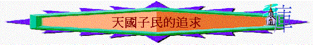

經文:太6:24-34
引言:太6:33 [求],英文是‘SEEK’,有尋求及追求的意思,今天若你來到神面前,向神表達你三個真心的願望,你會向神求什麼?
太6:24-34強調天國子民又要追求什麼事?
一.勿太重視物質
1.6:24
提[事奉],何謂[事奉(英文SERVE) ]?
何謂[主(MASTER)
]?
何謂[瑪門]?
財利
若一個人事奉[瑪門]代表什麼事?
他當[瑪門]是什麼?
主人
他的心如何對[瑪門]?
愛它,重視它,受它轄制,
為何不能事奉[瑪門]?因為會放輕神,不能同時重視,心也會放在另一面上
2.在你生活中有沒有一些[瑪門],你是愛及看重,有時不知不覺成為你的主人,你用很多時間來追求它呢?
二.勿憂生活需用
1.6:25提到憂慮,何謂憂慮? 6:25提到人可能會憂慮什麼事?
2.6:25提到為可不憂慮吃什麼,喝什麼,穿什麼? 因為不是人生最重要的事,生命及身體更重要
3.你最近憂慮什麼事? 你所憂慮的事是否你人生最重要及不可少的事呢? 有什麼比你所憂慮的更重要?
4.6:26
耶穌叫門徒看什麼?
為何看天上的鳥,可以放低憂慮?
用比較角度,天上的鳥神尚且養活,何況比鳥更貴重的人
5.你有沒有見過大自然的動物是天生天養,不愁餓死的?
6.6:27提到憂慮有什麼功用? 沒用 你有沒有經歷過用很多時間思慮而至終幫不到解決問題的事?
7.6:28-30又提到勿憂慮什麼事? 為何提到野地的百合花? 你有沒有見過一些很美麗的花朵? 另所羅門是誰? 王穿的衣通常怎樣? 你有沒有見過一些衣服很華麗的? 若和大自然神所造的花朵比較,你認為誰美麗?
8.6:30
解釋人為何憂慮?
小信
你同意嗎?
人沒信心會怎樣? 6:30又如何增加我們的信心?
看人的身份與神的看重:想起比人更卑賤的野草,神也如此妝飾,何況更尊貴的人
三.真正的追求
1.6:31
又提到神的女兒為何不用思慮及追求生活的事? 是外邦人求的,
神是知道我們的需要,我們要放心
2.耶穌鼓勵我們追求什麼事?
何謂神的國和神的義?神的國---願神的國降臨,願神的國在人心中掌權,願更多人成為天國子民,追求天國永恆的事
神的義---勝過法利賽人的義,太5-7所講的義,神眼中看為正的事
[先求]代表什麼事?
要放第一,優先的
3.人若先求神的事,神有什麼應許? 在你生活中,有否經驗過以上應許?
4.今日我們在生活中,又如何先求神的國和神的義?
5.最後,6:34又叫我們不要為明天憂慮,為什麼?
總結:今天你學到什麼真理,有什麼深刻地方